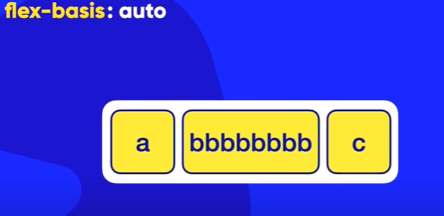
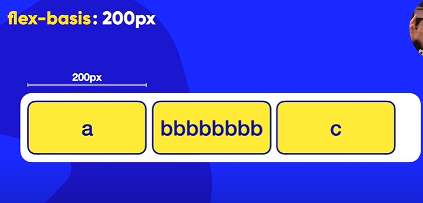

Propriedade: flex-basis -Possui o valor AUTO como padrão, significa que o tamanho do elemento no eixo principal é ditada pelo tamanho do conteudo, se o coneudo for muito grande vai aumentar a largura,
se você dar um valor para o flex basis todos os itens ficarao com o mesmo tamanho independente do conteudo dentro, esse tamanho ira se manter desde que o conteiner tenha um tamanho igual ou maior caso contrario ira quebrar
